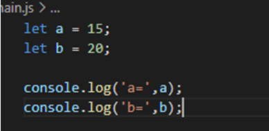

Massiv
-
Massiv berilgan:
sonlar = [1,2,5,77,54,3,2,1,17,23];
-
Shu massivdagi sonlarning yig`indisini chiqaring.
-
Massivdagi toq sonlar yig`indisi va ularning soni nechtaligini.
-
Massivdagi tub sonlarni console chiqaruvchi.
-
Massiv berilgan:
let students = ['Bobur','Shaxriyor','Shaxobiddin','Sardor'];
-
Massivga boshidan Abduvahob va ohiridan Muhammadjonni qo`shing.
-
Massivdagi talabalarni for siklidan foydalanib console ga chiqaring.
-
Massivni alifbo bo`yicha, keyin teskari navbatda saralang.
-
Hosil bo’lgan massivni foreach siklidan foydalanib console ga chiqaring.
-
Massivni teng 2 ta students1 va students2 massivlariga ajrating.
Polindrom
Foydalanuvchidan matn kiritishini so’rang, va agar bu patn polindrom bo`lsa , consolega “polindrom” aks holda “Polindrom emas” degan yozuvlarni chiqaring.
Joyni almashtirish

Yuqoridagi dasturda a va b o`zgaruvchilarining joyini almashtiring. Consoledagi yozuvga tegnilmasin.